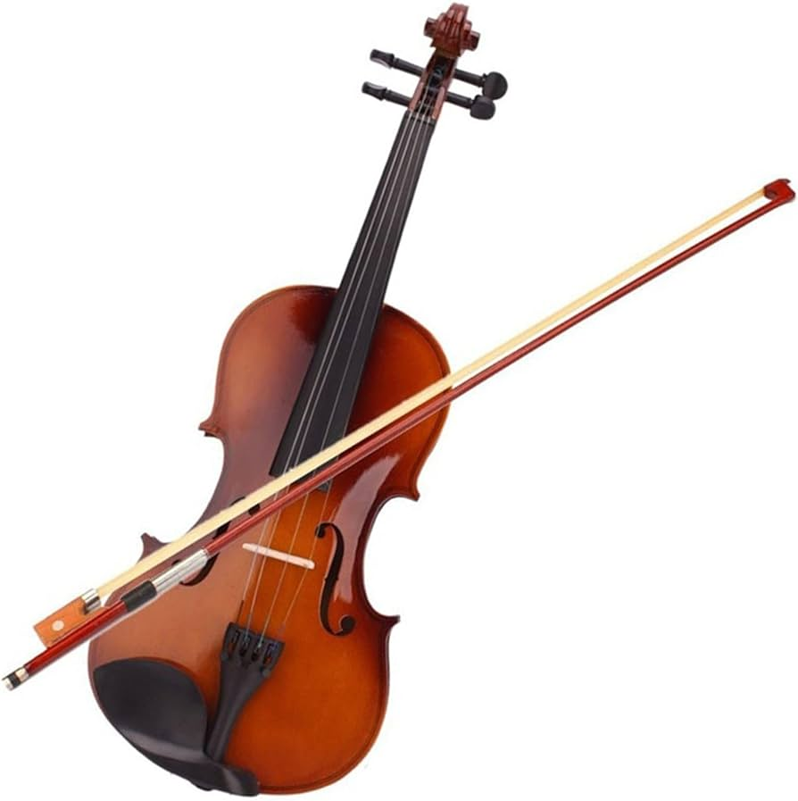
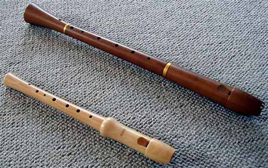
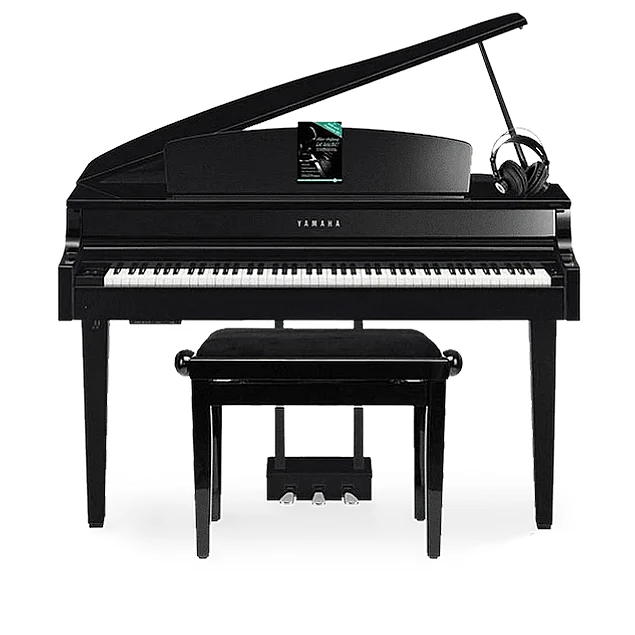
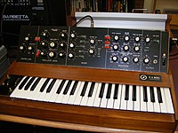

Instrumentos de Cuerda
Los instrumentos de cuerda son aquellos que producen sonido mediante la vibración de una o más cuerdas. Ejemplos incluyen el violín, la guitarra y el arpa.
Instrumentos de Viento
Los instrumentos de viento generan sonido por medio de la vibración del aire en su interior. Algunos ejemplos son la flauta, el clarinete y la trompeta.
Instrumentos de Percusión

Los instrumentos de percusión producen sonido al ser golpeados, sacudidos o raspados. Ejemplos populares son la batería, el xilófono y el tambor.
Instrumentos de Teclado
Los instrumentos de teclado, como el piano y el órgano, generan sonido a través de teclas que activan mecanismos internos para producir notas musicales.
Instrumentos Electrónicos
Los instrumentos electrónicos utilizan circuitos electrónicos para producir sonido. Ejemplos incluyen el sintetizador y el theremín.